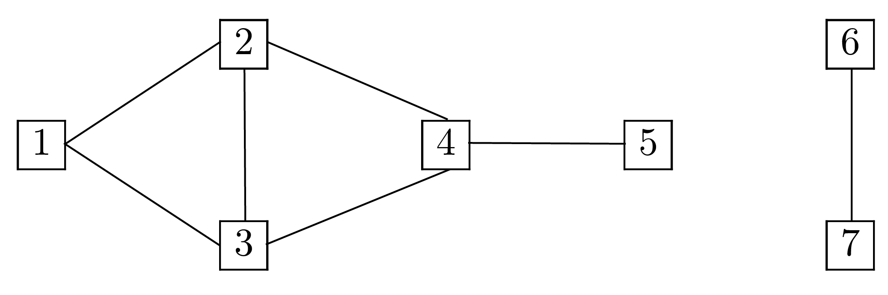
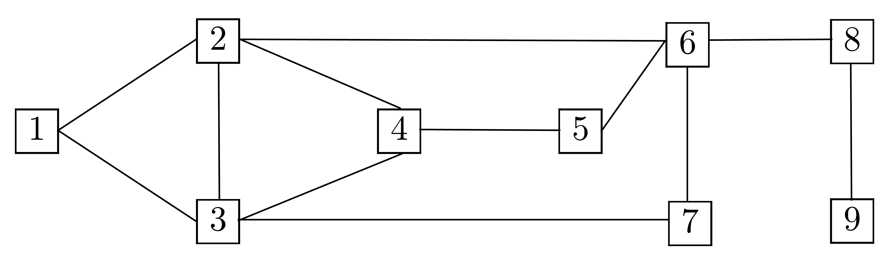
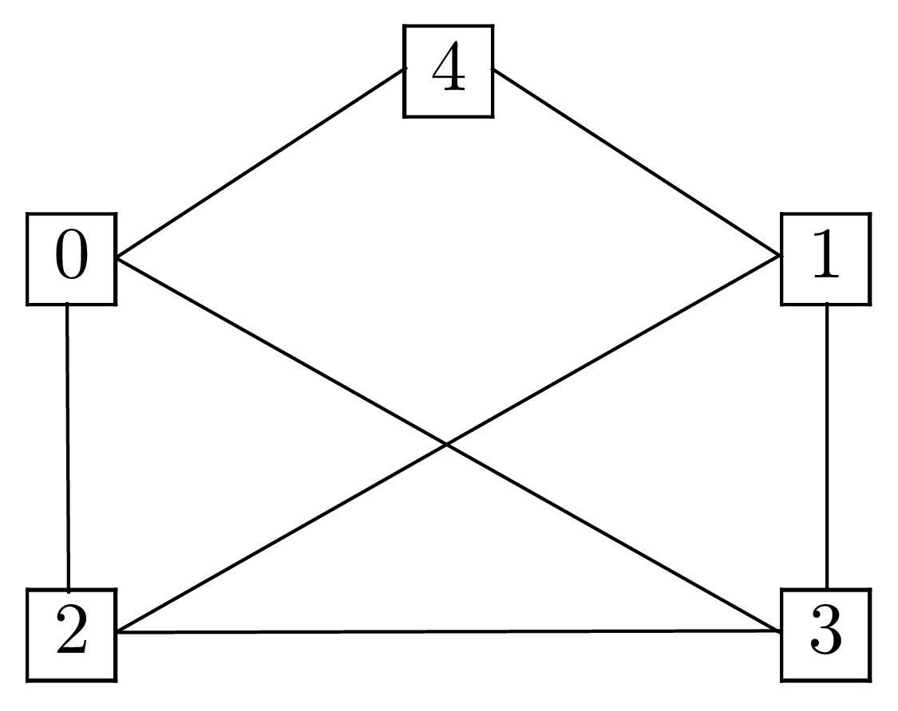
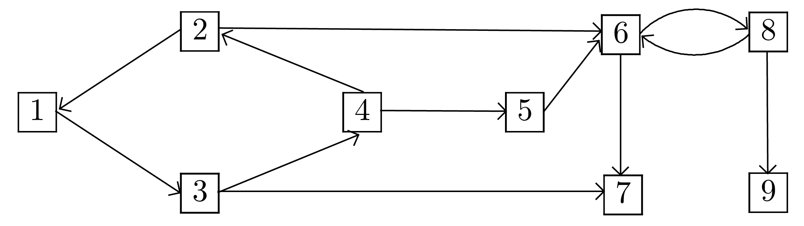
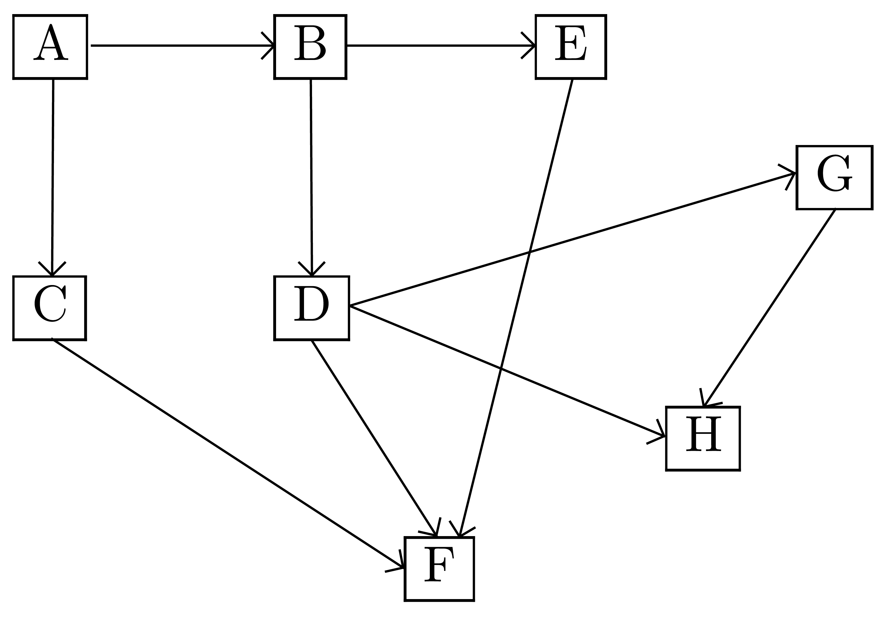
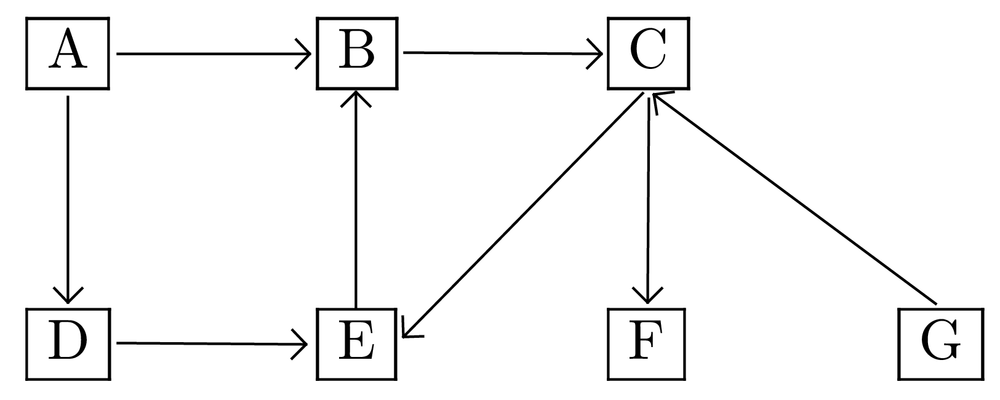
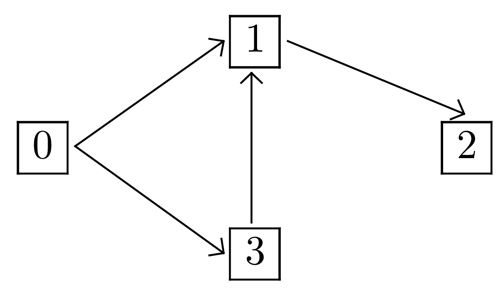
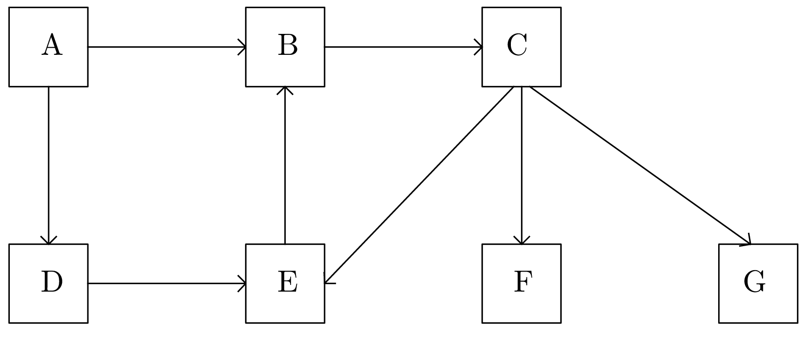

Le graphe non orienté doit être connexe. Si ce n'est pas le cas, il faut considérer une racine pour chaque composante connexe.
|
Définition. Le parcours d'un graphe consiste à visiter un à un tous ses sommets dans un certain ordre en passant par les arêtes (ou les arcs) depuis un sommet donné.
De nombreux types de parcours sont possibles. Parmi eux, on distingue :
Le parcours en largeur (BFS en anglais pour breadth first search) : on explore en priorité tous les voisins du premier sommet, puis tous les voisins des voisins du premier sommet, etc.
Le parcours en profondeur (DFS en anglais pour depth first search) : on explore en priorité les voisins du premier voisin du premier sommet, puis récursivement ses voisins respectifs.
La notion de parcours peut s'appliquer à un graphe orienté ou non.
Les algorithmes de parcours de graphes, une fois adaptés, servent à la résolution d'un certain nombre de problèmes parmi lesquels :
la détermination de la connexité et forte connexité d'un graphe ;
l'existence d'un circuit ou d'un cycle (ce qu'on appelle tri topologique) ;
le calcul des plus courts chemins (notamment l'algorithme de Dijkstra) ;
etc.
Un parcours en largeur débute à partir d'un nœud source. Puis il liste tous les voisins de la source, pour ensuite les explorer un par un. Ce mode de fonctionnement utilise donc une file dans laquelle il prend le premier sommet et place en dernier ses voisins non encore explorés. Les nœuds déjà visités sont marqués afin d'éviter qu'un même nœud soit exploré plusieurs fois. Dans le cas particulier d'un arbre, le marquage n'est pas nécessaire.
Mettre le nœud source dans la file ;
Retirer le nœud du début de la file pour le traiter ;
Mettre tous ses voisins non explorés dans la file (à la fin) ;
Si la file n'est pas vide reprendre à l'étape 2.
L'algorithme de parcours en profondeur diffère du
parcours en largeur car il continue l'exploration
jusqu'à arriver dans un cul-de-sac ou alors jusqu'à
atteindre un sommet déjà visité. Il revient alors
en arrière au niveau de dernier sommet qui propose un nouveau
chemin à explorer.
L'utilisation d'une
pile au lieu d'une file transforme l'algorithme du
parcours en largeur en l'algorithme de parcours en profondeur.
Le graphe non orienté doit être connexe. Si ce n'est pas le cas, il faut considérer une racine pour chaque composante connexe.

admet-il un parcours ? Justifier la réponse.
n'admet aucun parcours puisqu'il n'est pas connexe.

Pour chacun des parcours génériques de suivants, dire s'ils sont ou non des parcours en
largeur : , , ,
.
Justifier les
réponses négatives.
Donner trois parcours en largeur de , le premier partant du sommet 1, le deuxième du sommet 9 et le dernier du sommet 5.
Pour chacun des parcours génériques de suivants, dire s'ils sont ou non des parcours en
profondeur : , , ,
.
Justifier les
réponses négatives.
Donner trois parcours en profondeur de , le premier partant du sommet 1, le deuxième du sommet 9 et le dernier du sommet 5.
Étude des parcours :
: parcours en largeur ;
: pas parcours en largeur car 2 doit être visité avant 4 ;
: pas parcours en largeur car le 6 doit être visité avant le 7 ;
: pas parcours en largeur car 7 doit être visité avant 2.
Parcours en largeur (ils ne sont pas uniques) :
de sommet 1 : ;
de sommet 9 : ;
de sommet 5 : .
Étude des parcours :
: parcours en profondeur ;
: non pas parcours en profondeur, 9 n'est pas voisin du dernier sommet ouvert de , qui est 6 ;
: non pas parcours en profondeur, 5 n'est pas voisin du dernier sommet ouvert de qui est 1 ;
: parcours en profondeur.
Parcours en profondeur (ils ne sont pas uniques) :
de sommet 1 : ;
de sommet 9 : ;
de sommet 5 : .

Pourquoi peut-on parcourir ce graphe ?
Donner le parcours en largeur de sommet de base 0 en prenant les sommets par ordre croissant de leur étiquette.
Donner le parcours en profondeur de sommet de base 0, en prenant les sommets par ordre croissant de leur étiquette.
est un graphe connexe, on peut donc le parcourir.
Parcours en largeur depuis 0 : .
Parcours en profondeur depuis 0 : .

Le parcours est-il un parcours en largeur de ? Même question pour le parcours .
Pour chaque racine de donner un parcours en largeur de .
Le parcours est-il un parcours en profondeur de ?
Pour chaque racine de donner un parcours en profondeur de .
Le parcours est un parcours en largeur de contrairement au parcours .
Depuis le sommet :
1 :
2 :
3 :
4 :
5 : Ici le graphe n'est pas fortement connexe, il est simplement constitué de composantes fortement connexes. On ne peut donc pas visiter tous les sommets.
6 : Même remarque.
7 : Aucun parcours possible.
8 : Composante fortement connexe.
9 :
Le parcours est bien un parcours en profondeur de .
Depuis le sommet :
1 : ;
2 : ;
3 : ;
4 : ;
5 : On ne peut pas visiter tous les sommets.
6 : Idem
7 :
8 :
9 : .

Donner un parcours en largeur de de base le sommet .
Donner un parcours en profondeur de depuis le sommet .
Parcours en largeur possible depuis : ;
Parcours en profondeur possible depuis : .
Comment sortir d'un labyrinthe ? Il est conseillé de choisir une voie au hasard et de toujours suivre le mur situé à sa droite, l'avantage étant que si on rencontre un « cul-de-sac », cette méthode permet de faire demi-tour. Cependant cette méthode ne fonctionne pas si le labyrinthe forme un bloc et que la porte se trouve sur le mur à gauche. On « tourne alors en rond ». On « tourne aussi en rond » si le labyrinthe présente un bloc central.
Remarque. Le mur de droite ne possède aucune particularité et on peut choisir le mur de gauche. L'essentiel est de ne pas changer de mur lors de la progression.
On peut marquer au sol tous les endroits où on est passé. Si on parvient à nouveau sur une case marquée, on procède comme s'il s'agissait d'un « cul de sac ».
La description de sortie d'un labyrinthe décrite ci-dessus est en fait celle de la description du parcours en profondeur d'un graphe.

On marque , on emprunte (choix effectué au hasard)
On marque , on emprunte (choix imposé)
On marque , on emprunte (choix effectué au hasard)
On marque , on emprunte
déjà visité, on ne « s'enfonce » plus, on remonte jusqu'à
Aucun nouveau parcours depuis , on remonte jusqu'à
On emprunte
On marque . Aucun parcours depuis , on remonte jusqu'à
Aucun nouveau parcours depuis , on remonte jusqu'à
Aucun nouveau parcours depuis , on remonte jusqu'à
On emprunte
On marque , on emprunte
déjà visité, on ne « s'enfonce » plus, on remonte jusqu'à
Aucun nouveau parcours depuis , on remonte jusqu'à
On remarque qu'il n'existe aucun parcours qui conduit à .
Lors d'un parcours en profondeur on marque tous les sommets atteignables depuis le sommet de départ.
def parcours_profondeur(g: Graphe, vus: list[Sommet], c_sommet: str) -> None:
"""
Parcourt en profondeur le graphe g.
- vus est la liste des sommets déjà visités
- c_sommet est l étiquette du sommet de départ
"""
Remarque. L'algorithme doit utiliser la récursivité.
def parcours_profondeur(g: Graphe, vus: list[Sommet], c_sommet: str) -> None:
"""
Parcourt en profondeur le graphe g.
- vus est la liste des sommets déjà visités
- c_sommet le sommet de départ
Le parcours est accessible par lecture ultérieure de la liste vus.
"""
sommet = g.recuperation_sommet(c_s)
if sommet not in vus:
print(sommet.val, end=" ")
vus.append(sommet)
for s_adjacent in sommet.liste_adjacents():
parcours_profondeur(g, vus, s_adjacent.val)
Remarque. Cette fonction suppose que la classe Graphe possède une méthode recuperation_sommet qui retourne un objet de type Sommet à partir de l'étiquette du sommet et que la classe Sommet possède une méthode liste_adjacents qui retourne la liste d'adjacence du sommet. Finalement la classe Sommet possède l'attribut  qui représente l'étiquette du sommet.

Depuis le sommet 0 :
vus = [] ; s = 0 ; Appel : parcours_profondeur(g, [], 0)
vus = [0] ; s = 0 ; v = 1 ; Appel : parcours_profondeur(g, [0], 1)
vus = [0, 1] ; s = 1 ; v = 2 ; Appel : parcours_profondeur(g, [0, 1], 2)
vus = [0, 1, 2] ; s = 2 ; g.voisins(s) est vide, plus d'appel récursif.
vus = [0, 1, 2] ; s = 0 ; v = 3 ; Appel : parcours_profondeur(g, [0, 1, 2], 3)
vus = [0, 1, 2, 3] ; s = 3 ; v = 1 ; Appel : parcours_profondeur(g, [0, 1, 2,3], 1)
1 est dans vus, plus d'appel récursif.
def parcours_profondeur(g: Graphe, c_sommet: str) -> None:
"""
Parcourt en profondeur le graphe g.
c_sommet est l étiquette du sommet de départ
"""
Remarque. L'algorithme doit utiliser une structure de pile.
def parcours_profondeur(g: Graphe, c_sommet: str) -> None:
"""
Parcourt en profondeur le graphe g.
c_sommet est l étiquette du sommet de départ
"""
vus = [] # Sommets déjà visités
pile = Pile()
sommet = g.recuperation_sommet(c_s)
pile.empiler(sommet)
while not pile.est_vide():
sommet = pile.depiler()
if sommet not in vus:
vus.append(sommet)
print(sommet.val, end=" ")
for adjacent in sommet.liste_adjacents():
p.empiler(adjacent)
Remarque. Cette fonction suppose l'existence d'une classe Pile possédant les méthodes empiler, depiler et est_vide.
Remarque. Cette fonction suppose que la classe Graphe possède une méthode recuperation_sommet qui retourne un objet de type Sommet à partir de l'étiquette du sommet et que la classe Sommet possède une méthode liste_adjacents qui retourne la liste d'adjacence du sommet. Finalement la classe Sommet possède l'attribut qui représente l'étiquette du sommet.
Depuis le sommet 0 :
| 0 |
| 1 |
| 3 |
| 1 |
| 1 |
| 1 |
| 1 |
| 1 |
| 1 |
| 1 |
| 1 |
| 1 |
| 2 |
| 1 |
| 1 |
| 1 |
def parcours_largeur(g: Graphe, c_sommet: str) -> None:
"""
Parcourt en largeur le graphe g.
c_sommet est l étiquette du sommet de départ
"""
Remarque. L'algorithme doit utiliser une structure de file.
def parcours_largeur(g: Graphe, c_sommet: str) -> None:
"""
Parcourt en largeur le graphe g.
c_sommet est l étiquette du sommet de départ
"""
vus = [] # Sommets déjà visités
file = File()
sommet = g.recuperation_sommet(c_s)
file.enfiler(sommet)
while not f.est_vide():
sommet = f.defiler()
if sommet not in vus:
vus.append(sommet)
print(sommet.val, end=" - ")
for adj in sommet.liste_adjacents():
f.enfiler(adj)
| A |
| D | B |
| B | E |
| E | C |
 ,
,
| C | E | F | G |
| E | F | G |
| F | G |
| G |
def existe_chemin(g: Graphe, c_u: int, c_v: int) -> bool:
"""
Détermine s il existe une chemin entre les
sommets d étiquettes c_u et c_v.
"""
Remarque. La fonction existe_chemin doit utiliser l'une quelconque des fonctions parcours_profondeur.
def existe_chemin(g: Graphe, u, v) -> bool:
"""
Détermine s il existe une chemin entre les
sommets u et v.
"""
vus = []
parcours_profondeur(g, vus, u)
return v in vus
Pour contruire la chaîne entre deux sommets il est nécessaire de garder en mémoire le prédécesseur d'un sommet atteint. On remplace donc la liste vus par un dictionnaire vus au sein duquel une clé représente le sommet visité et sa valeur associée le sommet prédécesseur. Par la suite, il faut remonter le chemin depuis le sommet terminal jusqu'au sommet initial.
def parcours_chemin(g: Graphe, vus: Dict, pred, s) -> None:
"""
Parcours le graphe g depuis le sommet s en provenance
du sommet pred.
"""
def parcours_chemin(g: Graphe, vus: Dict, pred, s) -> None:
"""
Parcours le graphe g depuis le sommet u en provenance
du sommet pred.
"""
if s in vus.keys():
return None
vus[s] = pred
for voisin in g.donne_voisins(s):
parcours_chemin(g, vus, s, voisin)
def chemin(g: Graphe, c_u, c_v) -> List:
"""
Un chemin du sommet d étiquette c_u au sommet
d étiquette c_v s il existe, la liste vide sinon.
"""
def chemin(g: Graphe, u, v) -> List:
"""
Un chemin du sommet u au sommet v s il
existe, la liste vide sinon.
"""
vus = {}
parcours_chemin(g, vus, None, u)
if v not in vus.keys():
return []
chemin = []
sommet = v
while sommet is not None:
chemin.append(sommet)
sommet = vus[sommet]
return chemin.reverse()